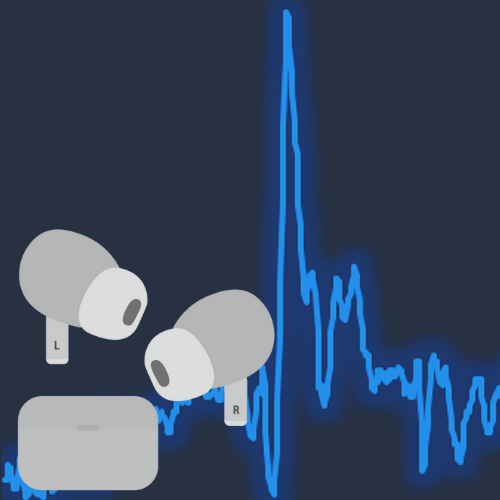
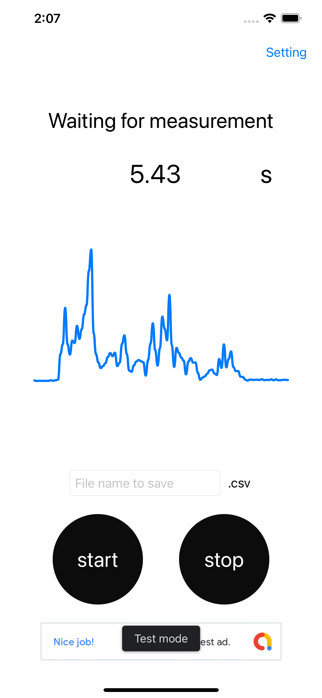
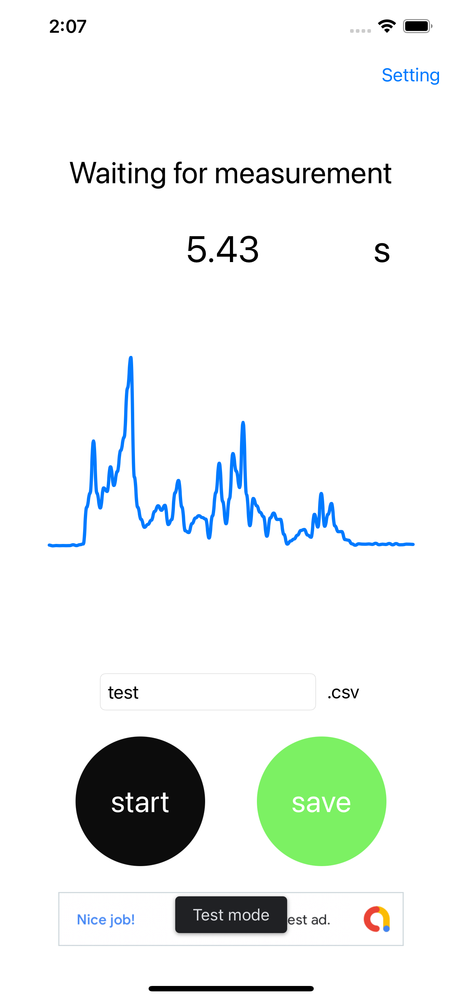
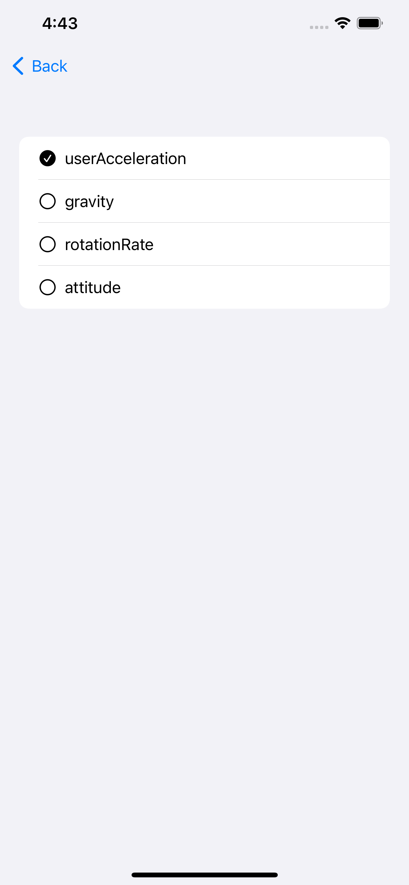

EarphonesAccelerationSensor

EarphonesAccelerationSensor
Airpodsからセンサデータを取得し、csvファイルに保存するアプリです。
設定で4種類のセンサから１つ選択し、計測することができます。
計測開始時からの経過時間も記録されます。
センサの種類
userAcceleration
x軸、y軸、z軸、合成加速度の4つのユーザ加速度データを取得できます。
gravity
x軸、y軸、z軸、合成加速度の4つの重力加速度データを取得できます。
rotationRate
x軸、y軸、z軸、合成加速度の4つの角速度データを取得できます。
attitude
Pitch, roll, yawの3つの姿勢に関するデータを取得できます。



何か不明な点がございましたらお問い合わせください。 e-mail:kanbe5631@gmail.com